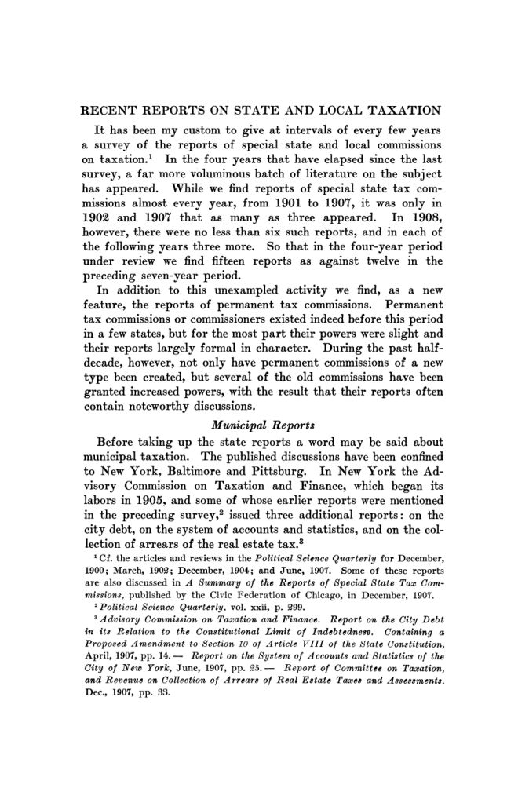

Junho de 1911: o plano Aldrich, o Canadá e a equação de trocas
Leitura: 5 min
O segundo número dedica três artigos ao plano Aldrich de reforma bancária, discute a reciprocidade com o Canadá e traz Seligman sobre tributação estadual e Fisher sobre a equação de trocas.


As notas do segundo número começam por uma explicação sobre a capa. O título geral das publicações da associação passava a ser Bulletin of the American Economic Association, com numeração própria, e abrangia a Review, que sairia quatro vezes por ano, os trabalhos da reunião anual e o Handbook. Pelas regras postais, o título inclusivo tinha de aparecer em tipo de destaque.
Por que três artigos sobre o mesmo plano?
O centro da edição é o plano que o senador Aldrich apresentara à National Monetary Commission, criando uma Reserve Association de bancos nacionais. Três autores o examinam de ângulos diferentes. Thornton Cooke, de Kansas City, vê nele a aplicação aos bancos do princípio de cooperação que já organizara ferrovias e indústrias, num país em que nenhuma das 23 mil unidades bancárias podia emitir nota de crédito.
Wm. A. Scott, da Universidade de Wisconsin, lista os defeitos que o plano pretende corrigir — a falta de elasticidade da moeda, o uso das reservas ligado à bolsa, a ausência de mercado para o papel comercial e o Tesouro independente — e pergunta se a instituição, com sede em Washington e quinze filiais, funcionaria sem obrigar ninguém a aderir. O. M. W. Sprague, de Harvard, discute os limites ao redesconto e o efeito multiplicador dos empréstimos do novo banco.
O que Hibbard via na reciprocidade com o Canadá?
Benjamin Horace Hibbard, do Iowa State College, abre o número contra o argumento de que a tarifa protegia o agricultor. Com base no relatório da Tariff Board de março de 1911, mostra que os salários de trabalhadores sazonais eram do mesmo nível em Manitoba e Minnesota, e em Saskatchewan e Dakota do Norte, e que o gado valia mais no Canadá, onde o inverno era longo e o milho não crescia. Adverte que o acordo não baixaria o custo de vida e que o ganho viria da expansão do comércio.
Sobre fazer o mesmo por reforma tarifária: “Sem dúvida poderíamos, mas sem dúvida não faremos.” (“Without doubt we could, but without doubt we won't.”)
O que dizem Seligman e Fisher?
Edwin R. A. Seligman, de Columbia, faz seu balanço dos relatórios de comissões de tributação. Contou quinze relatórios de comissões especiais em quatro anos, contra doze nos sete anos anteriores, e concluiu que a insatisfação com o imposto geral sobre a propriedade se tornara quase universal. Irving Fisher, de Yale, atualiza até 1910 os números da equação de trocas e decompõe a alta dos preços americanos desde 1896.
O que mais há na edição?
São 57 resenhas, com listas de lançamentos por área. James Bonar resenha a história das doutrinas econômicas de Gide e Rist; George Ray Wicker, o Das Wesen de Joseph Schumpeter; Edward Van Dyke Robinson, The Great Illusion, de Norman Angell. Em moeda e bancos, há a nova edição de Lombard Street, de Bagehot, o estudo de Kinley sobre o Tesouro independente e a resenha de Kemmerer sobre a passagem do México ao padrão-ouro. Seguem documentos oficiais, entre eles a investigação do diretor do Censo sobre as estatísticas de exportação, resumos de periódicos e as notas.
Na minha leitura
Na minha leitura, o número mostra a revista funcionando como foro de política econômica. Três economistas discutem o mesmo projeto de lei sem concordar em tudo, e o debate se dá sobre mecanismos concretos — quem subscreve o capital, que papel se redesconta, quanta reserva fica — e não sobre princípios gerais. Hibbard e Fisher completam o quadro com o mesmo cuidado: números oficiais, hipóteses declaradas e conclusões limitadas ao que os dados sustentam.
Glossário
- Reciprocidade
- acordo bilateral de redução mútua de tarifas, como o proposto entre Estados Unidos e Canadá que Hibbard discute.
- Tariff Board
- órgão técnico criado pelo governo americano para estudar custos de produção e o efeito das tarifas.
- Reserve Association
- instituição central proposta no plano Aldrich, de propriedade dos bancos nacionais, com filiais regionais.
- Tesouro independente
- sistema pelo qual o governo americano guardava seus fundos em subtesourarias próprias, fora dos bancos.
- Imposto geral sobre a propriedade
- tributo estadual e local que pretendia alcançar, com a mesma alíquota, imóveis e bens pessoais.
- Equação de trocas
- identidade MV + M'V' = PT, que iguala o gasto com moeda e cheques ao valor das transações.
Artigos desta edição
- Reciprocity and the Farmer — Benjamin Horace Hibbard (Iowa State College) (pp. 221–233). Hibbard examina o acordo de reciprocidade com o Canadá do ponto de vista do agricultor americano. Usa o relatório da Tariff Board de março de 1911 para mostrar que salários agrícolas eram semelhantes dos dois lados da fronteira no Oeste e que o gado valia mais no Canadá. Admite que terras virgens canadenses poderiam pressionar o valor de algumas terras americanas, mas lembra que a agricultura americana se deslocava para a pecuária e os laticínios. Adverte que a reciprocidade não baixaria o custo de vida; o ganho estaria na expansão do comércio. JSTOR
- Financial Co-Operation and the Aldrich Plan — Thornton Cooke (Kansas City, Mo.) (pp. 234–250). Cooke trata o plano Aldrich como uma forma de cooperação entre bancos, princípio que ferrovias e indústrias já haviam explorado. Lembra que nenhuma das 23 mil unidades bancárias do país podia emitir nota de crédito e que a cooperação existente, via correspondentes e câmaras de compensação, não protegia os bancos pequenos num pânico. Descreve a Reserve Association, a subscrição de 20% do capital e as associações locais, defende que ela fique restrita aos bancos nacionais e conclui que o plano legalizaria, de modo mais eficiente, o que os bancos já faziam. JSTOR
- The Aldrich Banking Plan — Wm. A. Scott (University of Wisconsin) (pp. 251–261). Scott enumera os defeitos que o plano Aldrich pretende corrigir: falta de elasticidade, uso pouco econômico das reservas e sua ligação com a bolsa, ausência de mercado para o papel comercial e os efeitos do Tesouro independente. Descreve a instituição central em Washington, com quinze filiais, e pergunta se ela funcionaria sem compulsão, já que nenhum banco seria obrigado a aderir. Julga remota a influência de Wall Street e critica a complexidade da administração. Sugere ampliar o alcance da Reserve Association, com acesso ao mercado aberto e a bancos estaduais. JSTOR
- The Aldrich Plan for Monetary Legislation — O. M. W. Sprague (Harvard University) (pp. 262–271). Sprague apoia o plano, mas propõe emendas. Limitaria a representação regional no conselho, critica a taxa de redesconto uniforme e sugere restringir as garantias das associações locais à metade do capital de cada banco. Mostra que os empréstimos regulares da Reserve Association se multiplicariam no sistema e defende que sirvam a necessidades temporárias. Estima um balanço inicial com 50% de reserva, propõe tributar as notas conforme a razão de reservas e sugere reservas definidas pela natureza do negócio de cada banco. JSTOR · ler o comentário
- Recent Reports on State and Local Taxation — Edwin R. A. Seligman (Columbia University) (pp. 272–295). Seligman faz seu balanço periódico dos relatórios de comissões estaduais e municipais de tributação. Conta quinze relatórios de comissões especiais em quatro anos, contra doze nos sete anos anteriores, e registra a novidade das comissões permanentes com mais poderes. Examina as propostas de Nova York, Baltimore e Pittsburg e de vários estados. Conclui que a insatisfação com o imposto geral sobre a propriedade se tornara quase universal e aponta como avanços a centralização da avaliação, a separação entre receitas estaduais e locais e a crescente participação de economistas profissionais. JSTOR
- "The Equation of Exchange," 1896-1910 — Irving Fisher (Yale University) (pp. 296–305). Fisher estende até 1910 as estimativas da equação de trocas de The Purchasing Power of Money e redesenha o diagrama da balança. Mostra que a moeda quase dobrou, os depósitos quase triplicaram e os preços subiram 72% desde 1896. Calcula o peso de cada fator, atribui o principal papel ao ouro e aponta a alta inédita da velocidade dos depósitos. Prevê uma contração em 1911 e, provisoriamente, uma crise entre 1913 e 1916, e conclui pedindo que os economistas estudem o controle do poder de compra da moeda. JSTOR · ler o comentário
- Charles Gide e Charles Rist, Histoire des doctrines économiques depuis les physiocrates jusqu'à nos jours — James Bonar (pp. 306–309). Resenha de James Bonar. JSTOR
- René Maunier, L'économie politique et la sociologie — Charles A. Ellwood (pp. 310–311). Resenha de Charles A. Ellwood. JSTOR
- Albion W. Small, The Meaning of Social Science — A. A. Y. (pp. 311–312). Resenha de A. A. Y. JSTOR
- Warner Fite, Individualism: Four Lectures on the Significance of Consciousness for Social Relations — Marion Parris (pp. 312–314). Resenha de Marion Parris. JSTOR
- C. Y. C. Dawbarn, The Social Contract — L. C. Gray (pp. 314–315). Resenha de L. C. Gray. JSTOR
- John A. Hobson, The Industrial System (nova edição revista) — Alvin S. Johnson (pp. 315–318). Resenha de Alvin S. Johnson. JSTOR
- Joseph Schumpeter, Das Wesen und der Hauptinhalt der theoretischen Nationalökonomie — George Ray Wicker (pp. 318–320). Resenha de George Ray Wicker. JSTOR
- Outlines of Economics, preparado por membros do Departamento de Economia Política da Universidade de Chicago — A. B. Wolfe (pp. 321–323). Resenha de A. B. Wolfe. JSTOR
- Wilbur Marshall Urban, Valuation: Its Nature and Laws — Lewis H. Haney (pp. 323–325). Resenha de Lewis H. Haney. JSTOR
- J. Wilson Harper, The Social Ideal and Dr. Chalmers' Contribution to Christian Economics — George Ray Wicker (pp. 325–326). Resenha de George Ray Wicker. JSTOR
- Yves Guyot, Economic Prejudices, trad. Fred Rothwell — C. W. Mixter (pp. 326). Resenha de C. W. Mixter. JSTOR
- New Books (pp. 326–327). Lista de livros recentes da seção de teoria e história, com notas breves. JSTOR
- H. J. Nieboer, Slavery as an Industrial System (2ª edição revista) — Ulysses G. Weatherly (pp. 327–329). Resenha de Ulysses G. Weatherly. JSTOR
- Edgar Powell, A Suffolk Hundred in the Year 1283 — Howard Gray (pp. 329–331). Resenha de Howard Gray. JSTOR
- Rudolf Leonhard, Agrarpolitik und Agrarreform in Spanien unter Carl III — Julius Klein (pp. 331–333). Resenha de Julius Klein. JSTOR
- Matthijs P. Rooseboom, The Scottish Staple in the Netherlands — Clive Day (pp. 333–334). Resenha de Clive Day. JSTOR
- Joseph D'Autremer, The Japanese Empire and Its Economic Conditions — Edward Alsworth Ross (pp. 334–335). Resenha de Edward Alsworth Ross. JSTOR
- Rudolf Dunker, Wirtschaftsstudien aus Südamerika, speziell über Chile — Edward D. Jones (pp. 335–336). Resenha de Edward D. Jones. JSTOR
- Josef Stoiser, Grundriss der allgemeinen Wirtschafts- und Verkehrsgeographie — Avard L. Bishop (pp. 336). Resenha de Avard L. Bishop. JSTOR
- Max Sering e outros; Hermann Schumacher, Das Moselland und die westdeutsche Eisenindustrie — H. S. Person (pp. 336–337). Resenha de H. S. Person. JSTOR
- New Books (pp. 337–339). Lista de livros recentes da seção de história econômica e geografia, com notas breves. JSTOR
- J. Saxon Mills, England's Foundation: Agriculture and the State — E. V. D. R. (pp. 339). Resenha de E. V. D. R. JSTOR
- George Thomas Surface, The Story of Sugar; George Martineau, Sugar, Cane and Beet; The Beet Sugar Industry (Ottawa) — Edward Van Dyke Robinson (pp. 339–340). Resenha de Edward Van Dyke Robinson. JSTOR
- New Books (pp. 340–341). Lista de livros recentes da seção de agricultura, mineração, florestas e pesca, com notas breves. JSTOR
- New Books (pp. 341). Lista de livros recentes, com notas breves. JSTOR
- Emory R. Johnson e Grover G. Huebner, Railroad Traffic and Rates — Ernest Ritson Dewsnup (pp. 341–344). Resenha de Ernest Ritson Dewsnup. JSTOR
- Ray Morris, Railway Administration — Charles A. Heiss (pp. 344–346). Resenha de Charles A. Heiss. JSTOR
- Water Terminals, parte III do relatório do Commissioner of Corporations sobre o transporte por água nos Estados Unidos — William H. Lough (pp. 346–347). Resenha de William H. Lough. JSTOR
- New Books (pp. 347–348). Lista de livros recentes da seção de transportes e comunicações, com notas breves. JSTOR
- Norman Angell, The Great Illusion — Edward Van Dyke Robinson (pp. 349–350). Resenha de Edward Van Dyke Robinson. JSTOR
- New Books (pp. 350–351). Lista de livros recentes da seção de comércio e crises comerciais, com notas breves. JSTOR
- Hartley Withers, Stocks and Shares — Charles A. Conant (pp. 351–352). Resenha de Charles A. Conant. JSTOR
- W. Prion, Die Preisbildung an der Wertpapierbörse — D. F. Grass (pp. 353–354). Resenha de D. F. Grass. JSTOR
- New Books (pp. 354–356). Lista de livros recentes da seção de contabilidade, métodos de negócios e investimentos, com notas breves. JSTOR
- Edward Sherwood Meade, Corporation Finance — M. B. Hammond (pp. 356–358). Resenha de M. B. Hammond. JSTOR
- Henry Vouters, Le petit commerce contre les grands magasins et les coopératives de consommation — T. K. Urdahl (pp. 358–359). Resenha de T. K. Urdahl. JSTOR
- New Books (pp. 359–360). Lista de livros recentes da seção de capital e organizações capitalistas, com notas breves. JSTOR
- Report on Collective Agreements between Employers and Workpeople in the United Kingdom (Board of Trade) — George E. Barnett (pp. 360–361). Resenha de George E. Barnett. JSTOR
- Cyril Jackson, Unemployment and Trade Unions — George E. Barnett (pp. 362–363). Resenha de George E. Barnett. JSTOR
- The Economic Position of Women (Proceedings of the Academy of Political Science, ed. H. R. Mussey) — Emilie Louise Wells (pp. 363–365). Resenha de Emilie Louise Wells. JSTOR
- G. Mény, Le travail à domicile: ses misères, les remèdes — Emma Duke (pp. 365–366). Resenha de Emma Duke. JSTOR
- Louis Delpérier, La protection de la santé des travailleurs du commerce — May Allinson (pp. 366–368). Resenha de May Allinson. JSTOR
- A. Lanzillo, Le mouvement ouvrier en Italie, trad. S. Piroddi — F. A. McKenzie (pp. 368). Resenha de F. A. McKenzie. JSTOR
- New Books (pp. 369–370). Lista de livros recentes da seção de trabalho e organizações trabalhistas, com notas breves. JSTOR
- James C. Smith, Legal Tender Essays — Harley L. Lutz (pp. 370–371). Resenha de Harley L. Lutz. JSTOR
- David Kinley, The Independent Treasury of the United States and its Relations to the Banks of the Country — Don C. Barrett (pp. 371–373). Resenha de Don C. Barrett. JSTOR
- Walter Bagehot, Lombard Street, revisto por Hartley Withers — M. S. Wildman (pp. 373–374). Resenha de M. S. Wildman. JSTOR
- Joseph French Johnson, The Canadian Banking System — R. M. Breckenridge (pp. 374–376). Resenha de R. M. Breckenridge. JSTOR
- Werner Hegemann, Mexikos Übergang zur Goldwährung — E. W. Kemmerer (pp. 376–378). Resenha de E. W. Kemmerer. JSTOR
- Herman Albert, Die geschichtliche Entwickelung des Zinsfusses in Deutschland von 1895 bis 1908 — Raymond V. Phelan (pp. 378–379). Resenha de Raymond V. Phelan. JSTOR
- New Books (pp. 379–381). Lista de livros recentes da seção de moeda, preços, crédito e bancos, com notas breves. JSTOR
- Henry Jones Ford, The Cost of Our National Government — Henry B. Gardner (pp. 381–382). Resenha de Henry B. Gardner. JSTOR
- State and Local Taxation: quarta conferência internacional da International Tax Association (Milwaukee, 1910) — E. T. Miller (pp. 382–383). Resenha de E. T. Miller. JSTOR
- James J. Harpell, Canadian National Economy; Edward Porritt, Revolt against the New Feudalism in Canada — O. D. Skelton (pp. 383–384). Resenha de O. D. Skelton. JSTOR
- J. Watson Grice, National and Local Finance — Henry B. Gardner (pp. 384–385). Resenha de Henry B. Gardner. JSTOR
- Speakers' Handbook (Tariff Reform League); T. I. Macnamara, Tariff Reform and the Working Man; L. M. S. Amery, Tariff Reform; Free Trade, de Robertson — Simon Litman (pp. 386–387). Resenha de Simon Litman. JSTOR
- C. H. Chomley e R. L. Outhwaite, Land Values Taxation; The Budget, the Land, and the People — Fred Rogers Fairchild (pp. 387–388). Resenha de Fred Rogers Fairchild. JSTOR
- Louis Gautier, L'État financier — C. C. Plehn (pp. 388–390). Resenha de C. C. Plehn. JSTOR
- New Books (pp. 390–393). Lista de livros recentes da seção de finanças públicas, tributação e tarifas, com notas breves. JSTOR
- New Books (pp. 393). Lista de livros recentes, com notas breves. JSTOR
- Scott Nearing, Social Adjustment — Robert Coit Chapin (pp. 393–394). Resenha de Robert Coit Chapin. JSTOR
- Charles Richmond Henderson (ed.), Correction and Prevention — Frank A. Fetter (pp. 394–396). Resenha de Frank A. Fetter. JSTOR
- Action Populaire, Année sociale internationale — Carol Aronovici (pp. 396). Resenha de Carol Aronovici. JSTOR
- Fernand Dubief, L'apprentissage et l'enseignement technique — James M. Motley (pp. 397). Resenha de James M. Motley. JSTOR
- New Books (pp. 397–398). Lista de livros recentes da seção de seguros e pensões, com notas breves. JSTOR
- Beatrice e Sidney Webb, English Poor Law Policy — Jeffrey R. Brackett (pp. 398–399). Resenha de Jeffrey R. Brackett. JSTOR
- W. H. Mallock, The Nation as a Business Firm — J. E. Le Rossignol (pp. 399–402). Resenha de J. E. Le Rossignol. JSTOR
- J. E. Le Rossignol e W. D. Stewart, State Socialism in New Zealand — Paul Kennaday (pp. 402–404). Resenha de Paul Kennaday. JSTOR
- Paul Lafargue, The Evolution of Property from Savagery to Civilization — F. A. McKenzie (pp. 404–405). Resenha de F. A. McKenzie. JSTOR
- Charles W. Eliot, The Conflict between Individualism and Collectivism in a Democracy — H. R. Seager (pp. 405–406). Resenha de H. R. Seager. JSTOR
- New Books (pp. 406–408). Lista de livros recentes da seção de socialismo e cooperativas, com notas breves. JSTOR
- Documents and Reports (pp. 409–426). Resumos de documentos oficiais, a começar pela investigação do diretor do Censo, Durand, que concluiu que as acusações contra a exatidão das estatísticas de exportação não se sustentavam. JSTOR
- Periodicals (pp. 427–451). Resumos de artigos de periódicos americanos e estrangeiros, organizados por área; os resumos de revistas italianas são de Robert F. Foerster. JSTOR
- Notes (pp. 452–461). Notas da associação: explicação da nova capa, com o título geral Bulletin of the American Economic Association, e a distribuição dos 1.817 sócios por estado em 20 de abril de 1911, a escolha de Washington para a reunião anual de 27 a 30 de dezembro e o convite ao congresso internacional de higiene e demografia. JSTOR
Fontes
- Reciprocity and the Farmer (pp. 221–233). JSTOR · Internet Archive (PDF)
- Financial Co-Operation and the Aldrich Plan (pp. 234–250). JSTOR · Internet Archive (PDF)
- The Aldrich Banking Plan (pp. 251–261). JSTOR · Internet Archive (PDF)
- The Aldrich Plan for Monetary Legislation (pp. 262–271). JSTOR · Internet Archive (PDF)
- Recent Reports on State and Local Taxation (pp. 272–295). JSTOR · Internet Archive (PDF)
- "The Equation of Exchange," 1896-1910 (pp. 296–305). JSTOR · Internet Archive (PDF)
- [untitled] The American Economic Review, (1911-06-01), pages 306-309 (pp. 306–309). JSTOR · Internet Archive (PDF)
- [untitled] The American Economic Review, (1911-06-01), pages 310-311 (pp. 310–311). JSTOR · Internet Archive (PDF)
- [untitled] The American Economic Review, (1911-06-01), pages 311-312 (pp. 311–312). JSTOR · Internet Archive (PDF)
- [untitled] The American Economic Review, (1911-06-01), pages 312-314 (pp. 312–314). JSTOR · Internet Archive (PDF)
- [untitled] The American Economic Review, (1911-06-01), pages 314-315 (pp. 314–315). JSTOR · Internet Archive (PDF)
- [untitled] The American Economic Review, (1911-06-01), pages 315-318 (pp. 315–318). JSTOR · Internet Archive (PDF)
- [untitled] The American Economic Review, (1911-06-01), pages 318-320 (pp. 318–320). JSTOR · Internet Archive (PDF)
- [untitled] The American Economic Review, (1911-06-01), pages 321-323 (pp. 321–323). JSTOR · Internet Archive (PDF)
- [untitled] The American Economic Review, (1911-06-01), pages 323-325 (pp. 323–325). JSTOR · Internet Archive (PDF)
- [untitled] The American Economic Review, (1911-06-01), pages 325-326 (pp. 325–326). JSTOR · Internet Archive (PDF)
- [untitled] The American Economic Review (1911-06-01), page 326 (pp. 326). JSTOR · Internet Archive (PDF)
- New Books (pp. 326–327). JSTOR · Internet Archive (PDF)
- [untitled] The American Economic Review, (1911-06-01), pages 327-329 (pp. 327–329). JSTOR · Internet Archive (PDF)
- [untitled] The American Economic Review, (1911-06-01), pages 329-331 (pp. 329–331). JSTOR · Internet Archive (PDF)
- [untitled] The American Economic Review, (1911-06-01), pages 331-333 (pp. 331–333). JSTOR · Internet Archive (PDF)
- [untitled] The American Economic Review, (1911-06-01), pages 333-334 (pp. 333–334). JSTOR · Internet Archive (PDF)
- [untitled] The American Economic Review, (1911-06-01), pages 334-335 (pp. 334–335). JSTOR · Internet Archive (PDF)
- [untitled] The American Economic Review, (1911-06-01), pages 335-336 (pp. 335–336). JSTOR · Internet Archive (PDF)
- [untitled] The American Economic Review (1911-06-01), page 336 (pp. 336). JSTOR · Internet Archive (PDF)
- [untitled] The American Economic Review, (1911-06-01), pages 336-337 (pp. 336–337). JSTOR · Internet Archive (PDF)
- New Books (pp. 337–339). JSTOR · Internet Archive (PDF)
- [untitled] The American Economic Review (1911-06-01), page 339 (pp. 339). JSTOR · Internet Archive (PDF)
- [untitled] The American Economic Review, (1911-06-01), pages 339-340 (pp. 339–340). JSTOR · Internet Archive (PDF)
- New Books (pp. 340–341). JSTOR · Internet Archive (PDF)
- New Books (pp. 341). JSTOR · Internet Archive (PDF)
- [untitled] The American Economic Review, (1911-06-01), pages 341-344 (pp. 341–344). JSTOR · Internet Archive (PDF)
- [untitled] The American Economic Review, (1911-06-01), pages 344-346 (pp. 344–346). JSTOR · Internet Archive (PDF)
- [untitled] The American Economic Review, (1911-06-01), pages 346-347 (pp. 346–347). JSTOR · Internet Archive (PDF)
- New Books (pp. 347–348). JSTOR · Internet Archive (PDF)
- [untitled] The American Economic Review, (1911-06-01), pages 349-350 (pp. 349–350). JSTOR · Internet Archive (PDF)
- New Books (pp. 350–351). JSTOR · Internet Archive (PDF)
- [untitled] The American Economic Review, (1911-06-01), pages 351-352 (pp. 351–352). JSTOR · Internet Archive (PDF)
- [untitled] The American Economic Review, (1911-06-01), pages 353-354 (pp. 353–354). JSTOR · Internet Archive (PDF)
- New Books (pp. 354–356). JSTOR · Internet Archive (PDF)
- [untitled] The American Economic Review, (1911-06-01), pages 356-358 (pp. 356–358). JSTOR · Internet Archive (PDF)
- [untitled] The American Economic Review, (1911-06-01), pages 358-359 (pp. 358–359). JSTOR · Internet Archive (PDF)
- New Books (pp. 359–360). JSTOR · Internet Archive (PDF)
- [untitled] The American Economic Review, (1911-06-01), pages 360-361 (pp. 360–361). JSTOR · Internet Archive (PDF)
- [untitled] The American Economic Review, (1911-06-01), pages 362-363 (pp. 362–363). JSTOR · Internet Archive (PDF)
- [untitled] The American Economic Review, (1911-06-01), pages 363-365 (pp. 363–365). JSTOR · Internet Archive (PDF)
- [untitled] The American Economic Review, (1911-06-01), pages 365-366 (pp. 365–366). JSTOR · Internet Archive (PDF)
- [untitled] The American Economic Review, (1911-06-01), pages 366-368 (pp. 366–368). JSTOR · Internet Archive (PDF)
- [untitled] The American Economic Review (1911-06-01), page 368 (pp. 368). JSTOR · Internet Archive (PDF)
- New Books (pp. 369–370). JSTOR · Internet Archive (PDF)
- [untitled] The American Economic Review, (1911-06-01), pages 370-371 (pp. 370–371). JSTOR · Internet Archive (PDF)
- [untitled] The American Economic Review, (1911-06-01), pages 371-373 (pp. 371–373). JSTOR · Internet Archive (PDF)
- [untitled] The American Economic Review, (1911-06-01), pages 373-374 (pp. 373–374). JSTOR · Internet Archive (PDF)
- [untitled] The American Economic Review, (1911-06-01), pages 374-376 (pp. 374–376). JSTOR · Internet Archive (PDF)
- [untitled] The American Economic Review, (1911-06-01), pages 376-378 (pp. 376–378). JSTOR · Internet Archive (PDF)
- [untitled] The American Economic Review, (1911-06-01), pages 378-379 (pp. 378–379). JSTOR · Internet Archive (PDF)
- New Books (pp. 379–381). JSTOR · Internet Archive (PDF)
- [untitled] The American Economic Review, (1911-06-01), pages 381-382 (pp. 381–382). JSTOR · Internet Archive (PDF)
- [untitled] The American Economic Review, (1911-06-01), pages 382-383 (pp. 382–383). JSTOR · Internet Archive (PDF)
- [untitled] The American Economic Review, (1911-06-01), pages 383-384 (pp. 383–384). JSTOR · Internet Archive (PDF)
- [untitled] The American Economic Review, (1911-06-01), pages 384-385 (pp. 384–385). JSTOR · Internet Archive (PDF)
- [untitled] The American Economic Review, (1911-06-01), pages 386-387 (pp. 386–387). JSTOR · Internet Archive (PDF)
- [untitled] The American Economic Review, (1911-06-01), pages 387-388 (pp. 387–388). JSTOR · Internet Archive (PDF)
- [untitled] The American Economic Review, (1911-06-01), pages 388-390 (pp. 388–390). JSTOR · Internet Archive (PDF)
- New Books (pp. 390–393). JSTOR · Internet Archive (PDF)
- New Books (pp. 393). JSTOR · Internet Archive (PDF)
- [untitled] The American Economic Review, (1911-06-01), pages 393-394 (pp. 393–394). JSTOR · Internet Archive (PDF)
- [untitled] The American Economic Review, (1911-06-01), pages 394-396 (pp. 394–396). JSTOR · Internet Archive (PDF)
- [untitled] The American Economic Review (1911-06-01), page 396 (pp. 396). JSTOR · Internet Archive (PDF)
- [untitled] The American Economic Review (1911-06-01), page 397 (pp. 397). JSTOR · Internet Archive (PDF)
- New Books (pp. 397–398). JSTOR · Internet Archive (PDF)
- [untitled] The American Economic Review, (1911-06-01), pages 398-399 (pp. 398–399). JSTOR · Internet Archive (PDF)
- [untitled] The American Economic Review, (1911-06-01), pages 399-402 (pp. 399–402). JSTOR · Internet Archive (PDF)
- [untitled] The American Economic Review, (1911-06-01), pages 402-404 (pp. 402–404). JSTOR · Internet Archive (PDF)
- [untitled] The American Economic Review, (1911-06-01), pages 404-405 (pp. 404–405). JSTOR · Internet Archive (PDF)
- [untitled] The American Economic Review, (1911-06-01), pages 405-406 (pp. 405–406). JSTOR · Internet Archive (PDF)
- New Books (pp. 406–408). JSTOR · Internet Archive (PDF)
- Documents and Reports (pp. 409–426). JSTOR · Internet Archive (PDF)
- Periodicals (pp. 427–451). JSTOR · Internet Archive (PDF)
- Notes (pp. 452–461). JSTOR · Internet Archive (PDF)
- Sumário da edição no JSTOR: The American Economic Review, vol. 1, nº 2.
Documento em domínio público (EUA, publicado antes de 1931), via JSTOR Early Journal Content e Internet Archive. Resumo e comentário do autor deste site, sem afiliação com a American Economic Association. Encontrou um erro? Escreva: a correção é publicada no próprio texto, com data.
← Nº 113 · St. Louis, 1910: preços desde 1896, Ricardo aos cem anos e educação Nº 115 · Setembro de 1911: sindicatos, tarifas de serviços públicos e impostos →